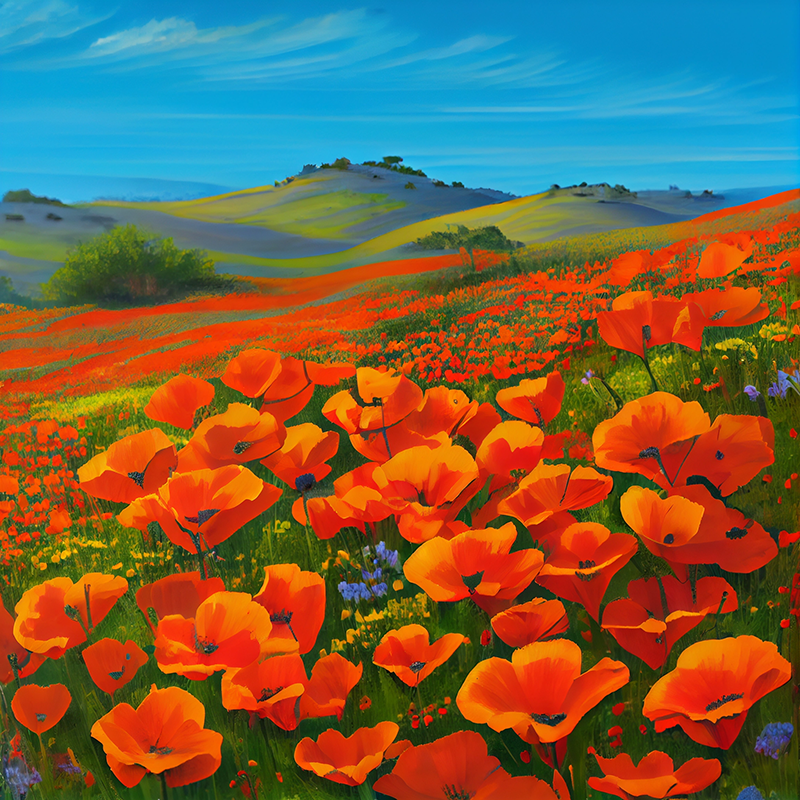
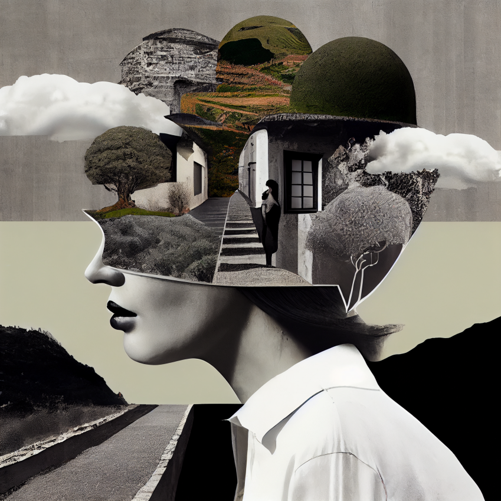
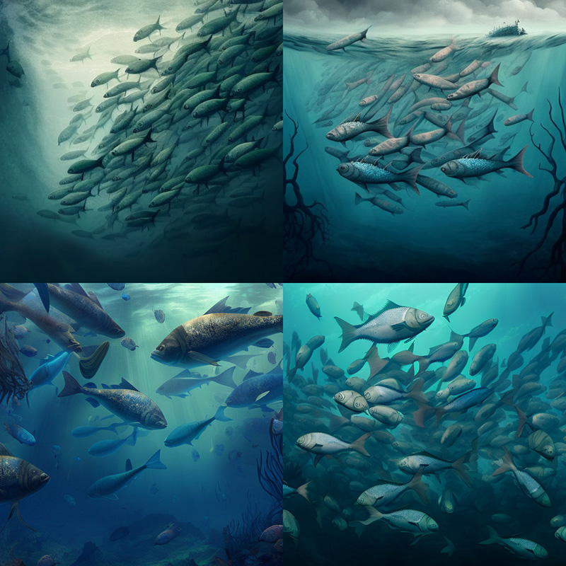
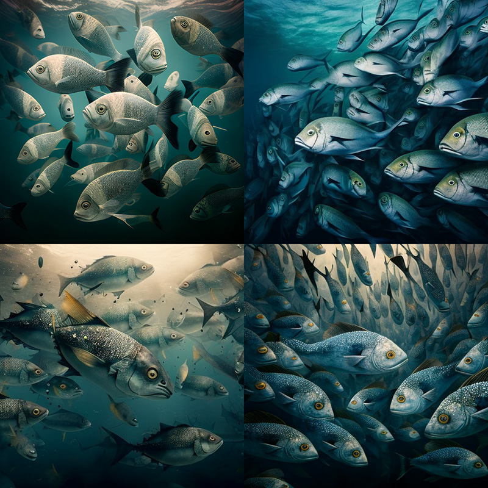
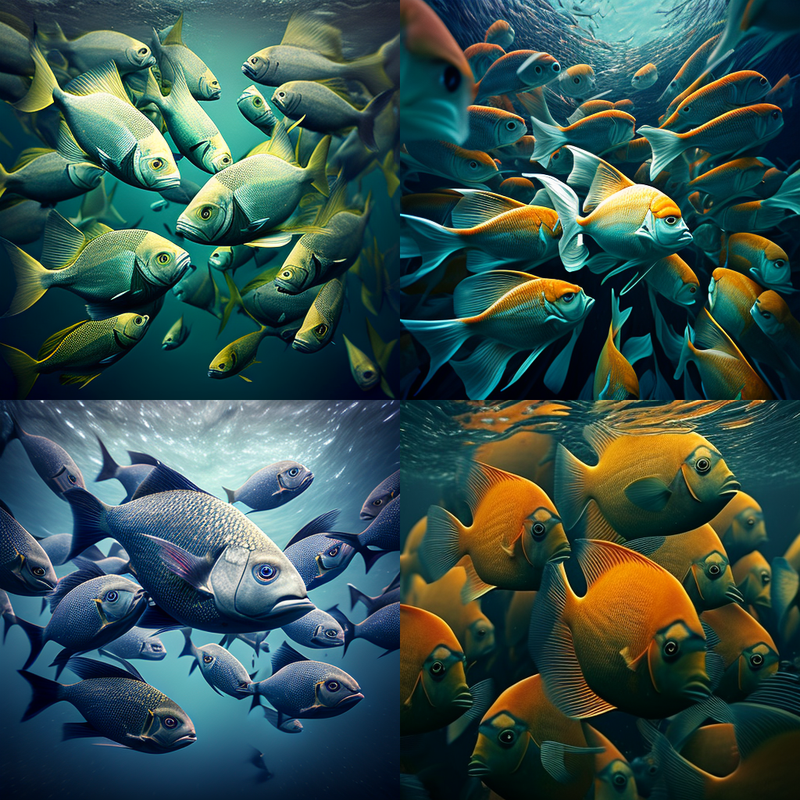
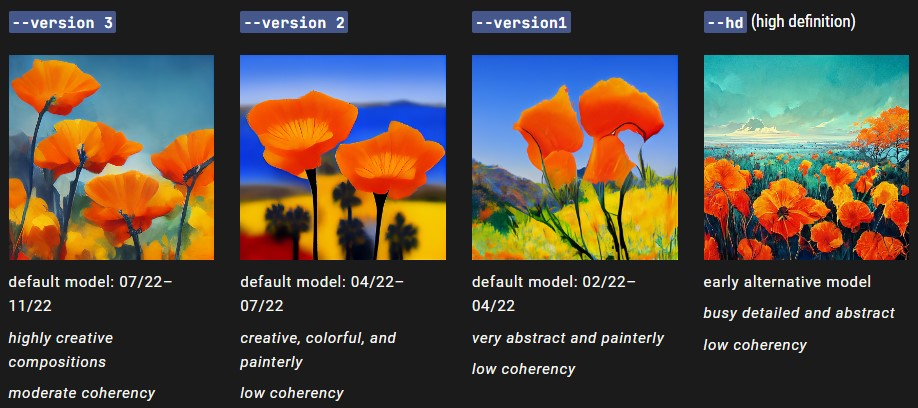
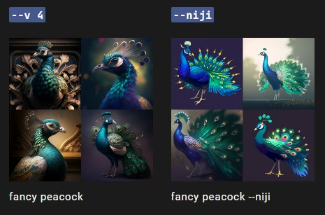
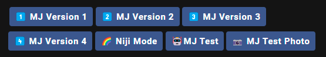

Versioni
Midjourney rilascia regolarmente nuove versioni del modello per migliorare l'efficienza, la coerenza e la qualità. L'ultimo modello è quello predefinito, ma si possono usare altri modelli usando il parametro --version o --v o usando il comando /settings e selezionando una versione del modello. I diversi modelli eccellono per i diversi tipi di immagini.
--versionaccepts the values 1, 2, 3, and 4.
--versioncan be abbreviated--v
Modello corrente
Midjourney V4 è un nuovo modello di Inteligenza artificiale basato una innovativa architettura sviluppato e testato sul nuovo cluster AI di Midjourney. L'ultimo modello ha una maggiore conoscenza di creature, luoghi, oggetti e altro ancora. È molto più bravo a cogliere i piccoli dettagli e può gestire richieste complesse con più personaggi o oggetti. Il modello della versione 4 supporta funzionalità avanzate come la richiesta di immagini e le richieste multiple.
Questo modello ha una coerenza molto elevata ed eccelle con i prompt di immagini.

Prompt: vibrant California poppies

Prompt: high contrast surreal collage
Versione 4, Style 4a, 4b e 4c
La versione 4 di Midjourney ha tre "gusti" leggermente diversi, con lievi modifiche alla messa a punto stilistica del modello. Sperimentate queste versioni aggiungendo --style 4a, --style 4b o --style 4c alla fine di un prompt con la V4.
--v 4 --style 4c è il valore predefinito attualmente e non deve essere aggiunto alla fine di un prompt.
Note su Style 4 a e 4b
--style 4ae--style 4bsupportano solo i rapporti 1:1, 2:3 e 3:2.
--style 4csupporta rapporti fino a 1:2 o 2:1.

school of fish --style 4a

school of fish --style 4b

school of fish --style 4a
Modelli precedenti
È possibile usare i modelli precedenti di Midjourney usando il parametro --version o --v o usando il comando /settings e selezionando una versione del modello. I diversi modelli si distinguono per i diversi tipi di immagini.
Esempio di prompt: /imagine prompt: vibrant California poppies --v 1

Modello Niji
Il modello Niji è una collaborazione tra Midjourney e Spellbrush messa a punto per produrre stili anime e illustrativi. Il modello --niji ha una conoscenza molto più approfondita degli stili e dell'estetica degli anime. È eccellente nelle riprese dinamiche e d'azione e nelle composizioni incentrate sui personaggi in generale.
Esempio di prompt: /imagine prompt: fancy peacock --niji

Note sul modello Niji
Niji non supporta il parametro--stylize. Usare il comando/settingse selezionareStyle Medper ripristinare l'impostazione di stile predefinita per tutti i prompt--niji
Niji supporta i prompt multipli o i prompt immagine.
Modello Test
Occasionalmente vengono rilasciati temporaneamente nuovi modelli per i test e i feedback della comunità. Attualmente sono disponibili due modelli di prova: --test--test e --testp, che possono essere combinati con il parametro --creative per ottenere composizioni più varie.
Esempio di prompt: /imagine prompt vibrant California poppies --testp --creative

Note sul modello corrente
--teste--testp
I modelli di test supportano solo valori di--stylizecompresi tra 1250-5000.
I modelli di test non supportano i multi-prompt o gli image-prompt.
I modelli di test hanno un rapporto d'aspetto massimo di 3:2 o 2:3.
I modelli di test generano solo due immagini della griglia iniziale quando il rapporto di aspetto è 1:1.
I modelli di test generano solo un'immagine iniziale della griglia quando il rapporto di aspetto non è 1:1.
Le parole vicine alla parte anteriore del prompt possono essere più importanti di quelle vicine alla parte posteriore.
Come cambiare modello
Usare la Versione o il parametro Test
Aggiungere --v 1, --v 2, --v 3, --v 4, --v 4 --style 4a, --v4 --style 4b --test, --testp, --test --creative, --testp --creative or --niji alla fine del prompt.

Usare il comando Settings
Digita /settings e seleziona dal menu la versione che preferisci
